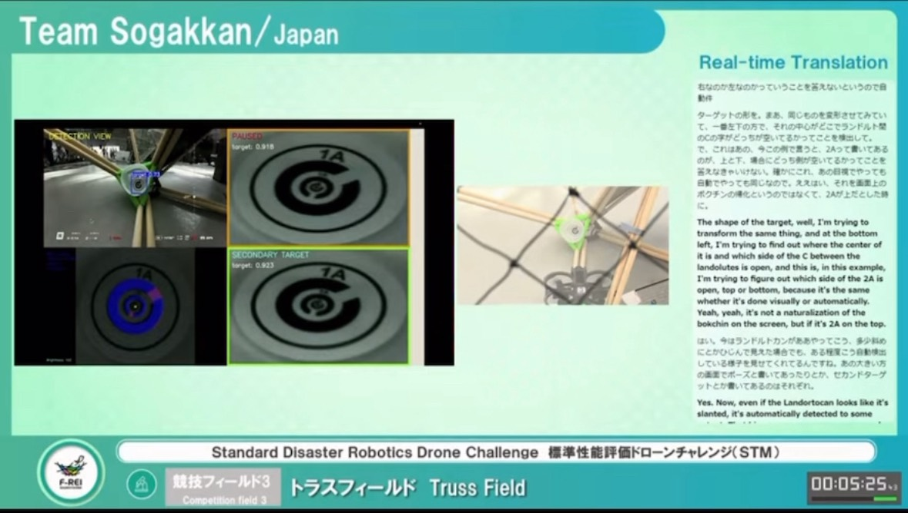
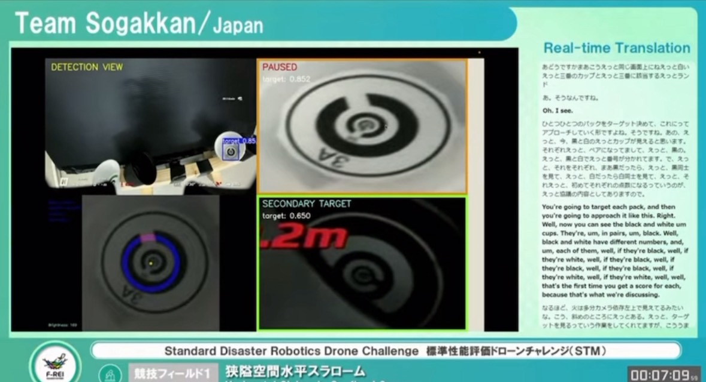
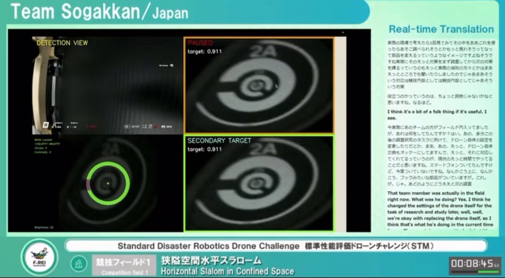
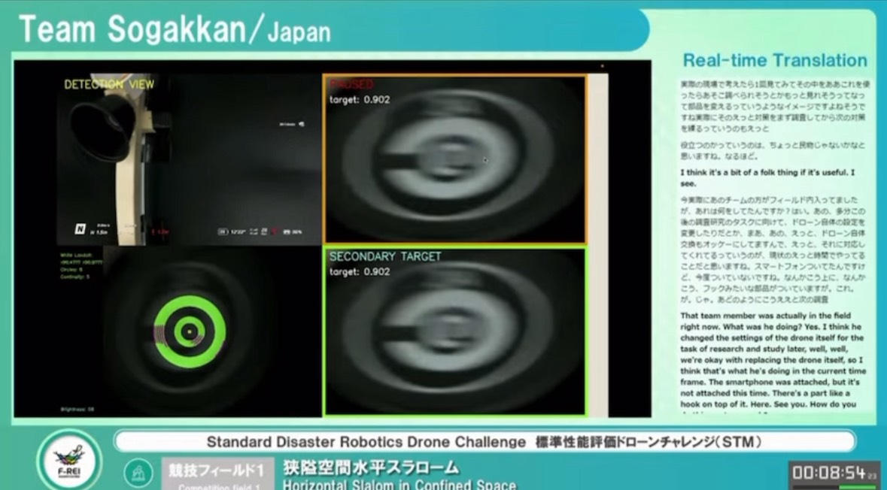
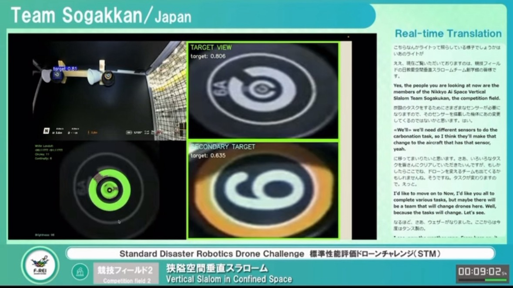
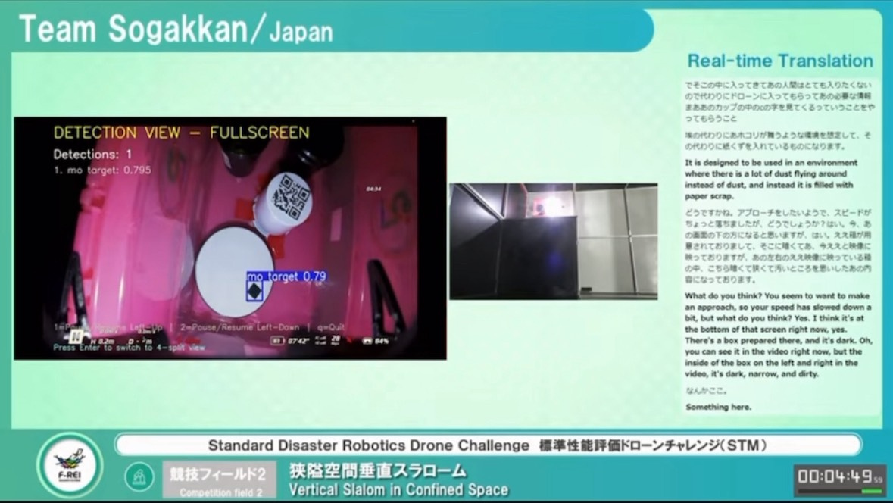
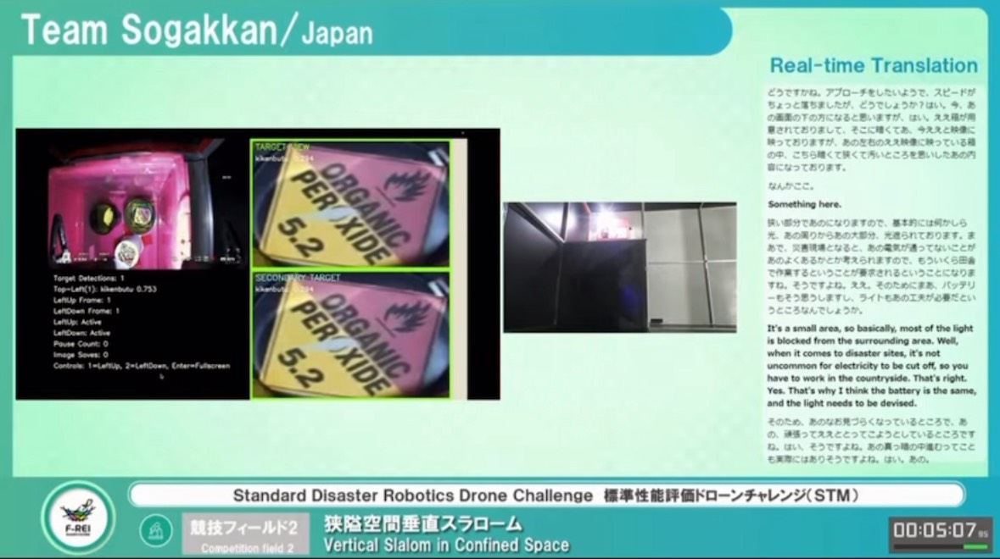
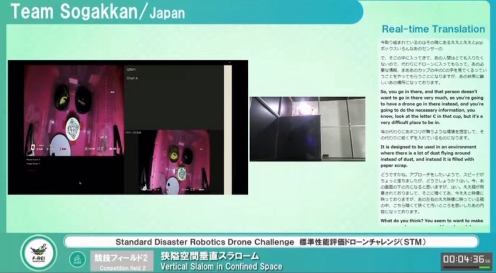

World Robot Summit（WRS）とは
World Robot Summit（WRS）は、ロボットの社会実装や研究開発の加速を目的とした国際的なロボット複合イベントです。課題解決に向けた新たなイノベーションの創出を目指しており、イベントの中心となる競技会では、最先端のロボット技術やソリューションを競うために、世界中から参加チームが集結します。
私が参加したのは STMチャレンジ（過酷環境 F-REI チャレンジ） で、大規模な災害による困難環境下で活躍するロボット・ドローンの開発、プラント・トンネル災害の予防、災害時の対応のための技術開発を目的とする競技です。
今回は TEAM-SOGAKKAN として、操学舘ドローンスクールと関西学院大学の合同チームで出場しました。操学舘はドローンの操縦とハードウェアの作成、関西学院大学はソフトウェアの作成を主に担当しました。
このポートフォリオについて
本サイトでは、WRS に向けて STM 部門で作成したシステムの UI 構成と概要を紹介しています。各システムのページでは、画面配置（左上・右上・右下・左下）の意図をテキストで説明し、画像は用意されたサンプルのみをギャラリーとして掲載しています。ギャラリー画像はクリックで拡大（ライトボックス表示）できます。
- システム1：ランドルト環認識
- システム2：数字＆ランドルト認識
- システム3：モーション検出
- システム4：危険物ラベル認識
- システム5：QRコード認識
各ページは上部ナビゲーションから移動できます。詳細はそれぞれのページをご覧ください。
各システムの概要
下記リンクから各システムの詳細ページへ移動し、ギャラリー画像をクリックして拡大表示できます。
システム1：ランドルト環認識システム ランドルト環ページへ
- 左上: YOLO によるリアルタイム認識
- 右上: 認識した画像をノイズ除去し拡大表示
- 右下: 二物体を同時に認識した際の拡大表示（右上と同仕様）
- 左下: ランドルト環の穴の位置を画像処理して表示




システム2：数字 & ランドルト認識システム 数字&ランドルトページへ
- 左上: YOLO によるリアルタイム認識
- 右上: 認識画像のノイズ除去・拡大表示
- 右下: 二物体同時認識の拡大表示
- 左下: 認識した情報の文字表示

- 認識ラベル: 7（信頼度 0.92）
- 認識ラベル: 3（信頼度 0.88）
- ランドルト環: 右開き（信頼度 0.90）
システム3：モーション検出 モーションページへ
- 表示内容: YOLO で学習した物体の検出と追跡を行い、経路やバウンディングボックスを表示

システム4：危険物ラベル認識 危険物ページへ
- 左上: YOLO によるリアルタイムの危険物ラベル検出
- 右上: 検出領域をノイズ除去して拡大表示
- 右下: 複数ラベル同時検出時の拡大表示
- 左下: ラベル属性・クラス・信頼度などのテキスト出力

- ラベル: 可燃性（Flammable）
- 信頼度: 0.94
- クラス: GHS02
システム5：QRコード認識 QRページへ
- 左上: QRコードの取得（カメラ/画像入力）
- 左下: 認識したQR情報の保存リスト
- 右上: 左下で選択したQRの内容を表示
- 右下: 選択QRに対応する画像を表示
